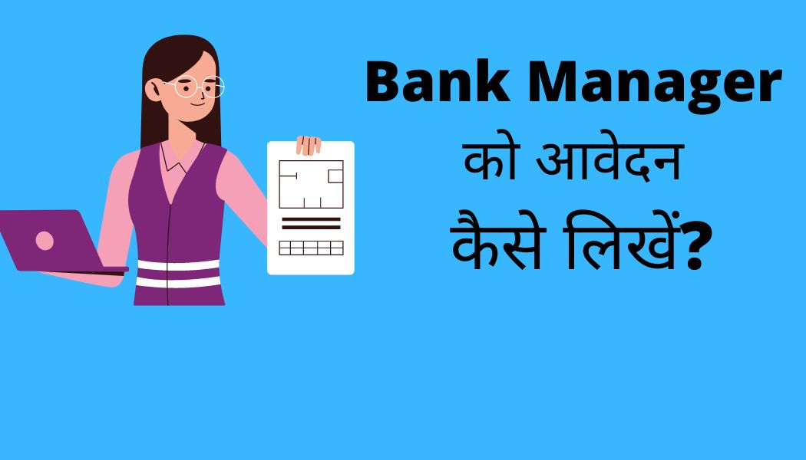

परिचय(Introduction)
Application for bank manager in hindi:-बैंक मैनेजर को आवेदन कैसे लिखें? यह एक महत्वपूर्ण प्रश्न है जो कई लोगों के मन में उठता है। जब हमें अपने बैंक अकाउंट को बंद करवाना, खाता ट्रांसफर करना, स्टेटमेंट प्राप्त करना या मोबाइल नंबर चेंज करवाना होता है, तो हमें बैंक मैनेजर के पास आवेदन करना पड़ता है।लेकिन बहुत से लोगों को यह नहीं पता कि बैंक मैनेजर को आवेदन कैसे लिखें। इस लेख में हम आपको यह बताएंगे कि आप किस तरीके से इन सभी परिस्थिति में बैंक मैनेजर को आवेदन कैसे लिख सकते हैं। इसमें बैंक मैनेजर को आवेदन कैसे लिखें, बैंक अकाउंट बंद करवाने हेतु आवेदन पत्र कैसे लिखें, बैंक खाता ट्रांसफर करने के लिए आवेदन कैसे लिखें, बैंक स्टेटमेंट के लिए आवेदन पत्र कैसे लिखें, और बैंक में मोबाइल नंबर चेंज करवाने के लिए आवेदन कैसे करें की पूरी जानकारी हिंदी में दी जाएगी।
आवदेन पत्र सही से लिखना बेहद ज़रूरी है, आवेदन लिखते समय किस तरह से लिखे किस तरह के भाषा और शब्द के उपयोग करें ये सब भी आपको जानने को मिलेगा । क्योंकि यदि आप application सही से नहीं लिखते हैं तो बैंक Manager इसे वापस कर देता है यानी यह approve नहीं होगी। चलिए हम आपको पूरी जानकारी देते है की बैंक मैनेजर को आवेदन पत्र कैसे लिखे?
ये भी पढ़े :-
Axis Bank Consolidated Charge क्या है?
Bank से Loan लेने के लिए कैसे बात करें?
Loan margin money क्या होता है?
Lien Amount क्या है? (Lien amount meaning In Hindi)

{kind=link}
बैंक अकाउंट बंद करवाने हेतु आवेदन पत्र? ( Bank account close application in hindi)
बैंक अकाउंट बंद करने का कोई भी वक्तिगत कारण हो सकता है। बैंक अकाउंट बंद करवाने के लिए बैंक मैनेजर को आवदेन देने कि जरूरत होती है, जिसके बाद ही खाता बंद होता है। अब सवाल यह उठता है कि जिस Account को आप बंद करवा रहे है उसमे मौजूद पैसे कहा जाएंगे। घबराइए मत उस अकाउंट में जितना भी पैसा है या तो वो आपको नगद दे दिया जाएगा या आपके दूसरे खाते में डाल दिया जाएगा। यदि आप भी अपना खाता बंद करवाना चाहते है तो हम आपको बताएंगे कि कैसे बैंक मैनेजर को application लिखा जाएगा।
सेवा में,
श्रीमान बैंक प्रबंधक महोदय
(अपने बैंक शाखा का नाम)
(अपने क्षेत्र और शहर का नाम)
विषय :– अपना (बचत या चालू) खाता बंद करवाने के संबंध में।
महाशय ,
उपर्युक्त विषय के संबंध में सादर निवेदन है कि मेरा नाम (अपना नाम दर्ज करे) है, आपकी बैंक शाखा ( अब बैंक शाखा का नाम दर्ज करे) में मेरा खाता है। जिसका अकाउंट नंबर (आपका बैंक अकाउंट नंबर लिखें) यह है। मै अपने व्यक्तिगत कारण से अब इस खाते को बंद करना चाहता/चाहती हूं।
इसलिए आपसे विनम्र निवेदन है कि आप मेरे खाते को बंद करने की कृपा करे। मेरे खाते में मौजूद पैसों को मुझे नकद दे/या मेरे इस नए बैंक खाते ( अकाउंट नंबर लिखें और IFSC लिखे) पर भेज देने की कृपया करे।
धन्यवाद
नाम :- (अपना नाम लिखें)
Signature:- (अपना हस्ताक्षर करें)
पता :- (अपना पता लिखें)
खाता संख्या :- (अपना खाता संख्या लिखे)
तिथि:- (आवेदन करने का तारीख़ डाले)
बैंक खाता ट्रांसफर करने के लिए आवेदन? (Bank Account transfer application in hindi.)
बैंक खाता ट्रांसफर करवाने के कई कारण हो सकते है। जैसे कहीं और घर बदलना, नौकरी का तबादला होना, आदि। खैर कारण कोई भी हो यदि आप भी बैंक अकाउंट ट्रांसफर करने के लिए एप्लिकेशन लिखना चाहते है तो हम आपको बताते है कि बैंक मैनेंजर को बैंक खाता ट्रांसफ़र करने के लिए आवेदन किस प्रकार प्रकार लिखे।
सेवा में,
शाखा प्रबंधक महोदय
(बैंक ,शाखा का नाम)
(बैंक शाखा का पता)
(क्षेत्र और शहर का नाम)
विषय – बैंक Account दूसरी बैंक शाखा में Transfer करने के लिए आवेदन पत्र।
महोदय,
उपर्युक्त विषय के संबंध में सविनय निवेदन यह है कि मेरा नाम (अपना नाम लिखे) है। मेरा खाता आपके शाखा_(अपने बैंक शाखा का नाम) में है। मेरा अकाउंट नंबर ( अपना अकाउंट नंबर दर्ज करे) है। ( अपना अकाउंट ट्रांसफर करवाने का कारण लिखे।) मैं अपने खाते को (नये ब्रांच का नाम जहां खाता ट्रांसफ़र करवाना चाहते हैं ) ट्रांसफ़र करवाना चाहता हूँ ।
अतः आपसे विनम्र निवेदन है कि मेरे बैंक अकाउंट को जल्द से जल्द ट्रांसफर करे आपकी अति कृपया होगी।
धन्यवाद
प्रार्थी का नाम
मोबाइल नंबर –
बैंक खाता संख्या –
दिनांक सहित हस्ताक्षर
बैंक स्टेटमेंट के लिए आवेदन पत्र कैसे लिखे? (Bank statement application in hindi)
बैंक स्टेटमेंट कई कार्यों में ज़रूरी होता है, लोन लेने के लिए भी बैंक स्टेटमेंट की जरूरत पड़ती है। यदि आपको भी बैंक स्टेटमेंट चाहिए तो इसके लिए आपको बैंक मैनेजर को आवेदन पत्र देना होगा। तो आइये जानते हैं ,कि आप किस प्रकार बैंक स्टेटमेंट के लिए आवदेन पत्र लिख सकते है।
सेवा मे,
श्रीमान शाखा प्रबंधक महोदय
(बैंक, शाखा का नाम)
(बैंक शाखा का पता)
विषय – अपने खाते का बैंक स्टेटमेंट प्राप्त करने हेतु आवेदन पत्र।
महोदय,
उपर्युक्त विषय के संबंध में सविनय निवेदन यह है कि मेरा नाम ( अपना नाम लिखे) है।मैं आपके बैंक शाखा में खाताधारी हूं। मेरी खाता संख्या (अपनी खाता संख्या लिखे) है। ( बैंक स्टेटमेंट क्यूं चाहिए वो कारण लिखे) इस कारण मुझे मेरे बैंक स्टेटमेंट की जरूरत है।
आपसे विनम्र निवेदन है कि आप मुझे ( कब से कब तक का स्टेटमेंट चाहिए वो तारीख लिखे) तक का खाता स्टेटमेंट प्रदान करे, इसके लिए मैं सदैव आपका आभारी रहूंगा।
धन्यवाद
नाम –
खाता संख्या –
दिनांक –
हस्ताक्षर –
बैंक में मोबाइल नंबर change करवाने के लिए आवदेन कैसे करे ?(Mobile Number Change Application to Manager)
कभी कभी ऐसा होता है जो नंबर हमने अपने बैंक में दिया होता है वो हमसे खो जाता है, या फॉन चोरी होने पर भी यह समस्या उत्पन्न हो सकती है। ऐसी situation में आपको बैंक में दूसरा नंबर लिंक करवाने की जरूरत पड़ेगी। पर यह कार्य केवल बैंक जाने से नहीं होगा इसके लिए आपको बैंक में application लिख कर देने की जरूरत है।
पर क्या आपको पता है मोबाइल नंबर चेंज करने हेतु आवेदन कैसे लिखा जाता है, चिंता मत कीजिए हम आपको बताएंगे कि कैसे इस आवेदन को लिखा जाए। एक बात ध्यान रखे आपको इस आवेदन को लिखने से पहले बैंक की पासबुक, आधार कार्ड की फोटो कॉपी, नया मोबाइल नंबर आदि। यह सभी दस्तावेज आपको अपने आवेदन पत्र के साथ लगा कर जमा करवाने है।आइये जानते हैं आवेदन का प्रारूप कैसा होगा –
सेवा में,
श्रीमान/ श्रीमती शाखा प्रबंधक
(अपने बैंक का नाम लिखे)
(यहां अपना पता लिखे)
विषय:- खाते में मोबाइल नम्बर बदलने के लिए आवेदन
महोदय,
निवेदन यह है कि मेरा नाम (अपना नाम लिखे), में आपके बैंक का खाताधारक हूं।मेरे खाते में (पुराना मोबाइल नंबर डालें ) मोबाइल नंबर पहले से रजिस्टर था ,मेरा मोबाइल खो जाने से मैं अपने बैंक से आने वाले Message नहीं प्राप्त कर पा रहाँ हूँ ,जिससे मेरे बैंकिंग कार्य में बढ़ा हो रही है ।
अतः श्रीमान से निवेदन है की मेरे खाते में मेरा नया मोबाइल नंबर (अपना नया नंबर डालें) रजिस्टर कर दिया जाय।इसके लिए मैं श्रीमान का सदा आभारी रहूँगा ।
धन्यवाद
नाम –
खाता संख्या –
दिनांक –
हस्ताक्षर –
हस्ताक्षर बदलने के लिए आवेदन (Signature Change Application to Manager)
बैंक खाते में दिये गये सिग्नेचर के अलावा कभी भी अगर आप अपने सिग्नेचर करने के तरीक़ों में बदलाव करते है तो इसकी सूचना तह नये सिग्नेचर का नमूना आपको बैंक में देना होगा ,इसके लिए आपको सिग्नेचर चेंज करने से रिलेटेड एप्लीकेशन बैंक मैनेजर को देना होगा ।तो आइये जानते है की इस तरह के आवेदन कैसे लिखते हैं ।
सेवा में,
श्रीमान/ श्रीमती शाखा प्रबंधक
(अपने बैंक का नाम लिखे)
(यहां अपना पता लिखे)
विषय:- खाते में मोबाइल हस्ताक्षर (signature) बदलने के लिए आवेदन
महोदय,
सविनय निवेदन सहित कहना है कि मैं (आपका नाम), आपके बैंक में खाता धारक और आपके बैंक का ग्राहक हूँ। मैं अपने बैंक खाते के संबंध में एक महत्वपूर्ण परिवर्तन करवाने के लिए आपकी मदद चाहता हूँ। मेरी समस्या निम्नलिखित है:
मैंने हाल ही में अपनी हस्ताक्षर (अपनी पहचानी हुई हस्ताक्षर) में परिवर्तन किया है और मैं चाहता हूँ कि मेरे खाते के सभी आवेदन पत्र और दस्तावेज़ में मेरा नया हस्ताक्षर उपयोग किया जाए। इसलिए, मैं अपना हस्ताक्षर परिवर्तन करने का अनुरोध कर रहा हूँ।
कृपया मेरे नये हस्ताक्षर को मेरे खाते विवरण (खाता संख्या, नाम, पता आदि) के साथ अपडेट करें और मेरे सभी लेन-देन और बैंक ग्राहक आवेदन पत्रों पर नया हस्ताक्षर लागू करें।
मैंने इस अद्यतन के लिए नीचे मेरे नए हस्ताक्षर की प्रतिलिपि संलग्न की है। कृपया इसे मेरे खाते में अपडेट करने की कृपा करें।
आपकी जल्दी की प्रतीक्षा करते हुए, मैं आपका धन्यवाद करता हूँ।
सादर, (आपका नाम)
(आपका खाता संख्या)
(नया हस्ताक्षर)
निष्कर्ष(Conclusion)
बैंक हमारी ज़िदंगी में बहुत सरुरी है व्यक्ति बैंक में अपनी पूरी ज़िदंगी की जमा पूंजी जमा कर के रखता है। बैंक एक बहुत ही Safe जगह है जहां आप अपना पैसा बिना डरे रख सकते है। पर बैंक में ऐसे कुछ काम होते है जिसे करवाने के लिए आपको आवेदन पत्र की जरूरत होती है। इसमें नया नंबर जुड़वाना, अकाउंट बंद करवाना, बैंक स्टेटमेंट के लिए, खाता ट्रांसफर आदि यह सब काम करवाने के लिए आवेदन पत्र देना होता है। पर यह आवेदन पत्र सही से लिखा होना चाहिए वरना बैंक मैनेजर इसे approve नहीं करता। आज हमने आपको बताया कि किस प्रकार आप सही तरीके से बैंक में यह सभी कार्यों के लिए एप्लिकेशन लिख कर जमा करवा सकते है।
Passbook खोने पर क्या करें?
सबसे अपने बैंक में जाकर खबर करें और न्यू पैस्बुक के लिए अप्लाई करें।
कसी भी कम के लिए बैंक मैनेजर को आवेदन देना ज़रूरी है?
नहीं ,कुछ कम जैसे मोबाइल नम्बर बदलना,न्यू passbook बनाना,atm बंद करना etc